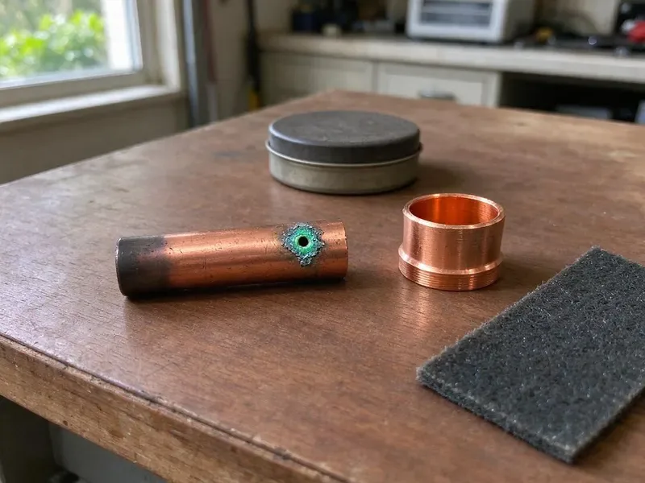

Underground Pipe Repair in Pine Bluff, AR
Water mains, sewer laterals, pool lines and irrigation supply. DGR Plumbing repairs them all in Pine Bluff, AR.
- Written Prices Before Digging
- Acoustic Leak Locating
- PEX or Type K Copper
- Minimal-Dig Methods

Get the Buried Leak Found in Pine Bluff, AR
Shut the meter valve if water is surfacing, and we will walk you through it on the phone.
Underground Pipe Repair That Starts With Leak Detection in Pine Bluff, AR
DGR Plumbing repairs the pipes you cannot see, including the water service from your meter, the sewer lateral to the street and buried lines to pools, guest houses and irrigation. We locate before we dig. Electronic locators trace the pipe path and acoustic gear listens for the hiss of escaping water, which keeps the repair smaller, faster and easier on the yard. The repair gets tested before backfill.
Work we handle every week:
- Trenchless pull-through and bursting replacement
- Acoustic and tracer gas leak detection on buried lines
- Small-pit spot repairs with pressure testing

Additional Plumbing Repair Services in Pine Bluff, AR
We offer expert plumbing repair services across Pine Bluff, AR to fix leaks, restore flow, and keep your system running smoothly.


Customers
Why Choose DGR Plumbing for Underground Pipe Repair in Pine Bluff, AR?
Our quotes list the footage, the pipe material, the method and the price. No vague line items. If we open the ground and find a second leak a few feet past the first, you see it and approve it before we go further. Nothing else changes.
- Right Materials, PEX or Type K copper for water, PVC for drain and sewer lines.
- Full Equipment, Locators, cameras and digging gear come on every underground call.
- Pinpoint Locating, Acoustic and electronic tools put a mark right over the break.
Citywide Coverage
We repair underground pipe in every part of Pine Bluff, from older blocks with galvanized services to newer subdivisions with PEX and PVC. We stock fittings for both. That means most jobs can start the same day we locate the leak, without waiting on a supply house run for a transition coupling.
Experienced Team
Techs ride with senior plumbers for months before running underground calls alone. Mistakes underground are costly. They learn bedding, depth and fittings on real jobs, and every repair still gets a pressure test before the hole is closed.
Safety-First Approach
An open hole in a yard is a hazard for kids and pets. We cover or fence it. If the job runs overnight, we cover the opening and put up barriers before we go.
Trusted Certified Pine Bluff Plumbing Services Professionals
At DGR Plumbing, we are proud to offer certified plumbing services throughout Pine Bluff, AR. Those papers on the wall mean something. Our plumbers hold recognized industry credentials, and they follow strict safety and quality rules on every repair, installation and maintenance call we run.
Call Us Now PHCC Plumbing Contractor Recognition
PHCC Plumbing Contractor Recognition Better Business Bureau (BBB) Accreditation
Better Business Bureau (BBB) Accreditation Angi Certified Pro
Angi Certified Pro ISO 9001 Quality Management Certification
ISO 9001 Quality Management CertificationBelow-Grade Pipe Repairs in Pine Bluff, AR
Storm Drain and Lateral Repair in Pine Bluff, AR
Storm laterals carry roof and yard water away from the foundation. When they fail, water pools. We jet the line, camera it for crushed or separated sections and replace the damaged corrugated or PVC pipe so water reaches the outlet instead of soaking the ground around your footings. We check the discharge end.

Buried Sewer Lateral Repair in Pine Bluff, AR
Buried laterals crack from roots, settling and age. Video locates the break. We excavate at the mark, cut out the damaged length and replace it with Schedule 40 PVC, using shielded transition couplings that match the old and new pipe. Fall gets checked before we close it.
Pool and Outbuilding Supply Line Repair in Pine Bluff, AR
Pool auto-fills, guest houses, outdoor kitchens and detached garages often have their own buried water lines. These runs are long. We use tracer wire, electronic locators and acoustic gear to find leaks along the full length, using buried-rated pipe and a pressure test before backfill. Some lines get rerouted instead.
Galvanized and Polybutylene Line Replacement in Pine Bluff
Galvanized steel rusts from the inside until little water gets through. Polybutylene splits instead. If your buried service is either one, patches are usually temporary, which is why we recommend a full swap to PEX or copper threaded along the existing route. You will notice the pressure.
Emergency Underground Pipe Services in Pine Bluff
Water bubbling up through the lawn means pressure is escaping somewhere. That is an emergency. Our after-hours crew locates the break, digs it out and fixes it the same visit in most cases, because the trucks carry common pipe sizes. Close the main until we arrive.
Trenchless Pipe Repair in Pine Bluff
Trenchless repair replaces or relines buried pipe without opening its full length. Two small pits, usually. We can pull new PEX or HDPE through the old pipe path or line a sewer lateral with resin, which leaves driveways, patios and mature landscaping in place. Not every pipe qualifies. The route and condition decide it.
Polybutylene Pipe Replacement in Pine Bluff
Polybutylene was used in a lot of homes built in the 1980s and early 1990s. It fails without warning. The gray plastic turns brittle as chlorine in the water attacks it, with failures most common at fittings and tight bends. Patching it just moves the next leak. We use PEX or copper.

Underground Water Line Repair in Pine Bluff, AR
A leaking water service runs at full street pressure around the clock. Bills climb fast. Low pressure, a wet spot that never dries and a meter that turns with everything off are the usual clues, and we confirm the leak with a pressure drop test before listening along the pipe route to find the exact spot. Repairs use approved fittings.
Underground Pipe Repair Near Me in Pine Bluff, AR
You want a crew that finds the leak and fixes it without a week of back and forth. We built our service around that. One crew locates it, digs it and repairs it, so nobody has to schedule three companies on three different days.
Searching for underground pipe repair near me in Pine Bluff, AR usually means the water bill already jumped. Every hour adds to it. Our crews arrive with locating gear and repair materials on the truck, which means the first trip usually ends with a mark on the ground and a price.
DGR Plumbing at a Glance
- Fully licensed plumbing team covering Pine Bluff, AR
- 24/7 emergency service with same-day scheduling
- Clear written estimates, no hidden fees
- 4.8-star rated by 871+ Arkansas customers
Pine Bluff Map
Pine Bluff Information
- Population
- 39,123
- Area codes
- Local
- Service area
- Pine Bluff and towns within a 40 mile drive
- Nearby
- Little Rock, Benton, North Little Rock, Sherwood
Old galvanized and polybutylene service lines in Pine Bluff, AR fail underground without much warning. Rocky, shallow soil in hilly parts of Arkansas makes trenching harder and can raise the cost on sewer and water line replacements.
Expert Services
Reach out to DGR Plumbing for honest, reliable plumbing from people who know the trade in Pine Bluff, AR.
Our Specialized Plumbing Services in Pine Bluff, AR
At DGR Plumbing, you get every kind of plumbing service from one company across Pine Bluff, AR. We go from leak detection all the way to full system installations, for homes and commercial buildings, and we do it quickly at a fair price. Here are the core services we offer:


How an Underground Pipe Repair Goes in Pine Bluff, AR
We locate before we dig, and we pressure test before we close the hole.
Call and Describe the Problem
Phone DGR Plumbing at (501) 251-9708 and tell us what you are seeing. We will book a locating visit.
Locate & Quote
We locate the leak with acoustic and electronic gear, mark it on the ground and write up the price.
Dig and Repair
Once you approve, we call 811, dig at the mark and repair the pipe.
Frequently Asked Questions About Underground Pipe Repair in Pine Bluff
Simple buried pipe repairs usually run $500 to $2,500. Sewer replacements cost more. Extensive trenchless sewer replacements can be $5,000 to $15,000 or more, depending on where the pipe runs, how bad the damage is and the method used to fix it. We quote after inspection.
Every repair is warrantied. We write the warranty down. Our workmanship warranty covers the repair, while the parts carry separate manufacturer coverage. We explain it before we start.
Probably not. Equipment makes the difference. Finding the leak takes acoustic or tracer gear, and fixing it means digging near utilities and using fittings rated for burial, so most homeowners end up paying for the repair twice after a DIY attempt. Sprinkler lines are fair game.
Not for main lines or sewer laterals. It goes wrong easily. Digging near gas and electric lines, working in an unshored trench and using fittings not rated for burial all lead to injuries, repeat leaks or contaminated drinking water. Leave it to a pro.
Most point repairs take a few hours to a day. Replacements take longer. A full service line replacement typically takes one to two days, with footage and method setting the pace. The schedule comes with the quote.
It is pipe repair or replacement through small access pits. We do it regularly. Pipe bursting and cured-in-place lining are the two main methods we use for Pine Bluff homeowners, and both leave most of the yard, driveway and landscaping undisturbed compared to an open trench. We check yours first.
Yes. Workmanship is warrantied in writing. The length depends on the type of repair and the materials used, with the terms laid out in your quote before you approve. Pipe carries its own coverage.
A minor leak repair can take a few hours. Full replacements take longer. A full trenchless sewer replacement could take one to three days, with footage and inspection timing as the main variables. The timeline is in the estimate.
What People Are Saying About Our Plumbing Experts?

Mark T.
The floor drain in our office break room backed up every few weeks. The plumber ran a cable, then put a camera down and found roots at a joint about thirty feet out. Seeing it on the screen made the decision easy.
Drain Cleaning · Conway, ARBrian W.
I smelled gas behind the dryer and called right away. The plumber found a corroded flex connector, replaced it, and pressure tested the whole line before turning the gas back on. He let me watch the gauge hold steady for fifteen minutes.
Gas Line Repair · North Little Rock, ARPaul B.
Our pit pump ran nonstop even in dry weather. The plumber found the check valve was stuck open, so the same water kept cycling back into the pit. New valve, new float switch, done in an hour. It runs quiet now.
Sump Pump · Sherwood, AR
Laura S.
Our 40 gallon tank started leaking from the bottom after thirteen years. The tech hauled the old one out, set a new unit with a fresh expansion tank, and had hot water running in about four hours. He took the old tank with him too.
Water Heater Replacement · Sherwood, ARJessica T.
We were adding a gas range in a kitchen remodel and needed a new line run from the meter. The plumber pulled the permit, ran the pipe through the crawl space, and had it inspected and approved within the week.
Gas Line Repair · Sherwood, AR
Robert G.
The camera showed a full break in our clay sewer line near the street. DGR Plumbing replaced it with a trenchless pipe burst, so the only digging was two small pits in the yard. They let us watch the footage before and after.
Sewer Line Replacement · Benton, AR